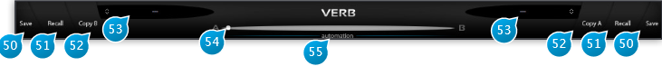

8 Preset Section

8.1 (50) Save
Saves a snapshot of the current settings for future use.
Short description and assorted comments can be provided, which comes in especially handy when sharing presets with other users, when the preset is part of a large preset bank, or to identify the author and source.
Entering a descriptive keyword is a good practice to be able to quickly sort your presets, according to character, the type of space they simulate (e.g. hall, room, etc.), and the intended usage (e.g voice, percussion, guitar, etc.)
A preset can be locked to prevent any further editing.
To re-save your preset under a new name, open the preset manager by clicking the corresponding (A/B) preset slot, then select New, enter a name for your preset, and finally press Save.
8.2 (51) Recall
Recall the settings from the currently selected preset, overwriting any current settings of the plug-in. The sub-menu which appears allows to recall at your choice:
- all parameters
- all parameters but setup: intended for when your particular speaker configuration is different from that of the preset’s author (typically stereo)
- all parameters but setup and dry/wet mix: useful in a mix setting when comparing and choosing presets
8.3 (52) Copy B
Copy current settings to the second parameter slot (B). To try out a variation of the current settings without erasing the reference, press this button, switch to B and adjust your parameters of choice, then switch or morph between A and B.
When copying a preset to a slot, the morphing slider will automatically fly to the corresponding slot.
8.4 (53) Preset Name
Displays the current preset name, if any. Clicking the associated button (up&down arrows) brings up the preset manager.
8.5 (54) Morphing A B
Gradually morphes parameters from A to B slots.
The parameter set associated with the current morphing slider position can be saved as a preset. In addition, when the morphing slider is in an intermediary position, any edit made to a parameter switches the slider back to slot A or B, whichever is closest to the current position.
8.6 (55) Automation
Enabling the Automation control switch makes the morphing slider exposed and available for automation read.
When engaged, keep in mind only the morphing slider value is used for automation, and other parameter values are ignored. This behavior is intended and necessary to prevent any parameter conflicts that would otherwise occur.
As a consequence of this, you need to make sure the Automation switch is engaged when mapping the morphing slider mapped to a control surface hardware knob or slider. On the opposite, when not engaged, the plug-in will listen for any parameter automation, except the morphing slider.